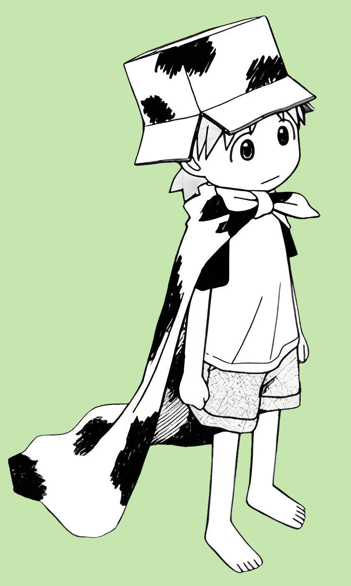

1.Dropping Paricles

- If you've studied Japanese, you'll know that particles like は, で and に are important parts of grammar.
- However, often, in spoken Japanese and especially casual speech, the particles は, が and を are dropped entirely.
- This might seem confusing at first, but if you look at the surrounding context, it will be a lot clearer!
- Examples:
これはおもちゃ → これ、おもちゃ。
音楽が好き → 音楽好き。
ケーキを食べた → ケーキ食べた。
@kallisto-no-planetarium